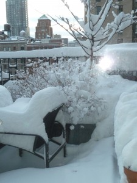

Q&A About Me
Q: How does it feel to be famous?
A: When I visit schools, I feel like a rock star. Sometimes, adults find out I am the author of STONE SOUP. They get very excited because they knew the book when they were children. Maybe your mother remembers STONE SOUP, too. My friend, Nola, did the art for the first edition. The new edition is in full color.
Q: What are your biggest worries?
A: I am concerned about the world and the state of the earth (75% of the earth is water). I write letters and call politicians. Many of the books I write reflect my cares.
There are organizations for saving the whales, elephants, mountain gorillas, etc. Write to me for lists. The seas and coral reefs are in danger, too. Now, when I scuba dive or snorkel, I can see bleached dead coral. Sharks are being killed for their fins to make soup! We need sharks for a natural balance in the sea.
Q: Did I say I love traveling?
A: I love traveling!
Q: What do you do when you’re not writing?
A: I can’t get on a bus or a subway without a book. I can’t go to sleep without reading. There are always stacks of books I want to read next to my bed. I sometimes I read e-books when I take a long trip, so I don’t have the weight of 20 books in my suitcase. I also go to the theatre and concerts, and enjoying watching movies. I take photographs, write poetry for adults and make art pieces out of collage stuff. I try and see friends and family as often as time allows. I also like to go to art museums and galleries. I love to eat but I’m not a great cook. I love to be on or under the water. I love Central Park for its trees and flowers and birds and ponds. I love nature and the first snow in winter and the first flowering trees in spring and the first autumn colors and the first warm summer day. I love walking and exploring everywhere. Even though I lived in New York City all my life, there are still some streets in my city I’ve never even seen!

First snow last winter on the balcony of my apartment.
Q: What is your favorite color?
A: I love bright colors, especially on rainy or gray days. I love purple and red and bright blue and green and yellow. I’d say purple is my favorite.
Q: What is your favorite sport?
A: Scuba diving! I love all the fascinating creatures of the sea. I love being weightless in the water, too, turning somersaults and playing leapfrog and never feeling the weight of that 30-pound air tank on my back. My second-favorite sport is horseback riding. I try to ride in the different countries I visit. I love riding a horse along a beach — and sometimes in the water, too.
Q: Do you have pets?
A: I travel too often to keep a pet at home. But I visit my family’s pets often.
Q: Do you have kids?
A: I have four children and they all are married. I have three wonderful grandchildren, five grand cats and a grand dog. We all live far from each other and I organize a family reunion at least once a year. Read about them and see their pictures in My Family.
At Disneyworld, daughter Annie and John and my grandkids: Dennis, Sharon and Chris.
Q: Are you married?
A: I was married to Marty Scheiner, my fabulous husband, for 22 years. He died a number of years ago.
Marty and I on our wedding day.
Q: Were you a good student?
A: Some teachers didn’t think I was. I always got an A in English and I was a literary editor of the school magazine. But I wasn’t good at Math and Latin. History was taught in a boring way, memorizing dates and bare facts. I loved to learn and I read all the time. Unfortunately I didn’t read what we were studying in school so I didn’t get good grades. If I had the chance to do high school over again, I’d do much better.


{kind=link}
{kind=link}
{kind=link}
{kind=link}
{kind=link}